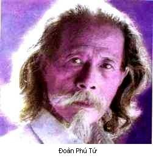

Sinh ngày 10-9-1910 ở Hà Nội. Học ở Hà Nội. Có bằng tú tài Tây.
Viết văn từ năm 1925, lúc còn học lớp Nhất. Những bài văn đầu tiên là những bài từ khúc đăng báo Đông Pháp. Sau này thỉnh thoảng viết giúp Phong Hoá, Ngày nay. Năm 1937, chủ trương tờ Tinh hoa. Chuyên viết kịch. Làm thơ rất ít.

.Hẳn có kẻ sĩ sẽ ngạc nhiên thấy Đoàn Phú Tứ trong quyển này. Người ta vẫn nghĩ Đoàn Phú Tứ chỉ có tài viết kịch và diễn kịch. Nhưng thơ hay không cần nhiều. Đoàn Phú Tứ chỉ làm thơ có dăm bảy bài mà hầu hết là những bài đặc sắc. Ấy là một lối thơ rất tinh tế và rất kín đáo. Thi nhân ghi lại bằng những nét mong manh những cảm giác rất nhẹ nhàng. Người xem thơ cũng biết rằng đây là hình ảnh một đôi mẩu đời, nhưng hình ảnh mờ quá không thể đoán những mẩu đời kia như thế nào. Có khi cả ý nghĩa bài thơ cũng không hiểu rõ.
Nhiều người khi làm thơ chỉ biết có mình, không giấu giếm gì hết; thơ làm ra in lên báo lên sách thì được, nhưng không thể đưa đọc trước người khác vì quá sỗ sàng. Đoàn Phú Tứ không thể. Tôi tưởng Đoàn Phú Tứ có thể đọc thơ mình trước mọi người mà không sợ ngượng.
Tháng 5-1941
MÀU THỜI GIAN[1]
Sớm nay tiếng chim thanh
Trong gió xanh
Dìu vương hương[2] ấm thoảng xuân tình
Ngàn xưa không lạnh nữa, Tần phi [3]
Ta lặng dâng nàng
Trời mây phảng phất nhuốm thời gian [4]
Màu thời gian không xanh
Màu thời gian tím ngát [5]
Hương thời gian không nồng
Hương thời gian thanh thanh [6]
Tóc mây một món chiếc dao vàng [7]
Nghìn trùng e lệ phụng [8] quân vương
Trăm năm tình cũ lìa không hận
Thà nép mày hoa thiếp phụ chàng [9]
Duyên trăm năm dứt đoạn
Tình một thuở còn hương
Hương thời gian thanh thanh
Màu thời gian tím ngát
1. Báo Ngày nay, số 198 (số Tết), ngày 27-1-1940
Chú thích:
[1] Không ai ngờ một cái đầu đề có tính cách triết học như thế lại dùng để nói một câu chuyện tâm tình
[2] Hãy để ý cái âm điệu vương vấn của mấy chữ này
[3] Thi nhân mượn sự tích người xưa để giữ vẻ kín đáo cho câu chuyện. Xưa có người cung phi, nàng Lý phu nhân lúc gần mất nhất định không cho vua Hán Võ đế xem mặt, sợ trông thấy nét mặt tiều tụy vua sẽ hết yêu. Cái tên Tần phi thi nhân đặt ra vì một lẽ riêng. Ngàn xưa không lạnh nữa: Chuyện xưa đã hầu quên nay nhớ lại lòng thấy nôn nao.
(4) Thi nhân muốn nói dâng hồn mình cho người yêu. Song nói như thế sẽ sỗ sàng quá. Vả người thấy mình không có quyền nói thế, vì tình yêu ở đây chưa từng được san sẻ. Nên phải mượn cái hình ảnh "Trời mây phảng phất nhuốm thời gian" để chỉ hồn mình. Chữ "nhuốm" có vẻ nhẹ nhàng không nặng nề như chữ "nhuộm". Chữ "dâng" hơi kiểu cách.
(5) Người Pháp thường bảo thời gian màu xanh. Nhưng thi nhân nhớ lại thời xưa, hồi người đương yêu, cứ thấy màu thời gian tím ngát vì người riêng thích một thứ hoa tím, và màu hoa lẫn với màu yêu.
(6) Hương thời gian là hương thứ hoa kia mà cũng là hương yêu, một thứ tình yêu qua đã lâu rồi, nên chỉ thấy thanh sạch, nhẹ nhàng.
(7) Nàng Dương Quý Phi lúc mới vào cung, tính hay ghen, bị Đường Minh Hoàng đưa giam một nơi. Nhưng nhà vua nhớ quá sai Cao lực sĩ ra thăm. Dương Quý Phi cắt tóc gửi vào dâng vua. Vua trông thấy tóc, thương quá, lại vời nàng vào cung.
Đoàn Phú Tứ hợp chuyện này và chuyện Lý phu nhân làm một và tưởng tượng một người cung phi lúc gần mất không chịu để vua xem mặt chỉ cắt tóc dâng, gọi là đáp lại trong muôn một mối tình trìu mến của đấng quân vương.
Ở đây không có chuyện cắt tóc nhưng có chuyện khác cũng tương tự như vậy.
(8) Chữ "phụng" rất kín đáo, chữ "dâng" sẽ quá xa vời, chữ "tặng" quá suồng sã.
(9) Ý nói: thà phụ lòng mong mỏi của chàng, còn hơn gặp chàng trong lúc dung nhan tiều tụy để di hận về sau.
(10) Tím ngát tả đúng mối tình dìu dịu. "Tím ngắt" sẽ đau đớn quá.
Bình
Nói về toàn thể nên chú ý đến điệu thơ. Bài thơ bắt đầu bằng những câu dài ngắn không đều: âm điệu hoàn toàn mới. Kể đến bốn câu ngũ ngôn cổ phong, một lố thơ cũ mà các thi nhân gần đây cũng thường dùng. Bỗng chuyển sang thất ngôn: điệu thơ hoàn toàn xưa. Lời thơ cũng xưa với những chữ ‘‘phụng quân vương’’ và những chữ lấy lại ở câu Kiều ‘‘tóc mây một món dao vàng chia hai’’. Nhưng với hai câu thất ngôn dưới thi nhân đã từ chuyện người xưa trở về chuyện mình. Những chữ ‘ ‘thiếp phụ chàng’’ đưa dần về hiện tại. Rồi điệu thơ lại trở ngũ ngôn với hương màu trên kia.
Thành ra lời thơ, ý thơ, điệu thơ cùng với hồn thi nhân đi từ hiện tại về quá khứ, từ quá khứ gần đến quá khứ xa, rồi lại dần dần trở về hiện tại. Hiện tại chỉ mờ mờ nhạt nhạt, nhưng càng đi xa về quá khứ, câu thơ càng thiết tha, càng rực rỡ. Nhất là chỗ từ ngũ ngôn chuyển sang thất ngôn câu thơ đẹp vô cùng. Tôi tưởng dầu không hiểu ý nghĩa bài thơ người ta cũng không thể không nhận thấy cái vẻ huy hoàng, trang trọng của câu thơ. [1]
Trong thơ ta có lẽ không có bài nào khác tinh tế và kín đáo như thế.
[1] Nhạc sĩ Nguyễn Xuân Khoát có đua phả bài thơ này vào đàn. Đoạn đầu bài nhạc đi rất mau, rồi chậm dần. Đến đoạn thất ngôn nhạc lên giọng majestuoso. ồi cùng còn thêm một đoạn lấy lại âm điệu mấy câu đầu